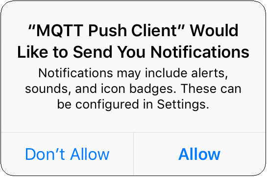
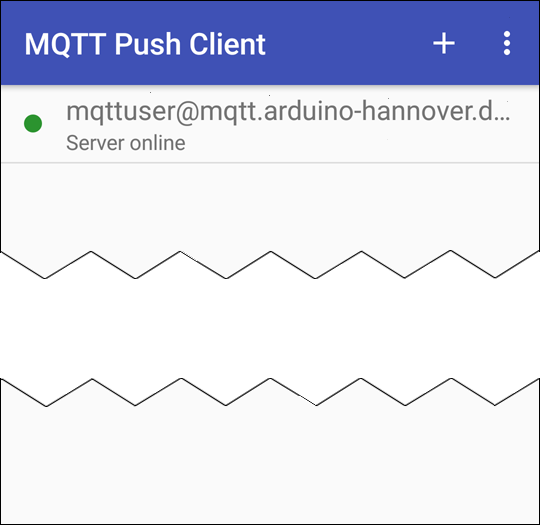
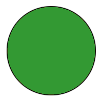
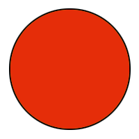

When the app is started for the very first time, you will be asked if the app is allowed to send notifications. You should confirm this by tapping on the Allow button:

The standard port for the push notification server is 2033. This specification can be omitted if the push server is accessible under this port number. Otherwise the port number must be appended to the domain name, e.g. “yourpushserver.de:2009”.


Your MQTT server account should now be listed on the home page:


An icon adjacent to the server name informs you about the connection status. This icon can take on three different colors:
|  | Ok. Push server and MQTT server are up and running an available. Cloud messaging is active. |
| Like above, only with the difference that cloud messaging might not work because no connection to the cloud messaging service could be established (e.g. no Internet connection). | |
|  | Push server or the specified MQTT server are not available, or the authorization failed. Also, notifications may not work. |
Multiple users can use an identical account. For example, family members or members of a group can automatically use identical settings and get notified at the same time.